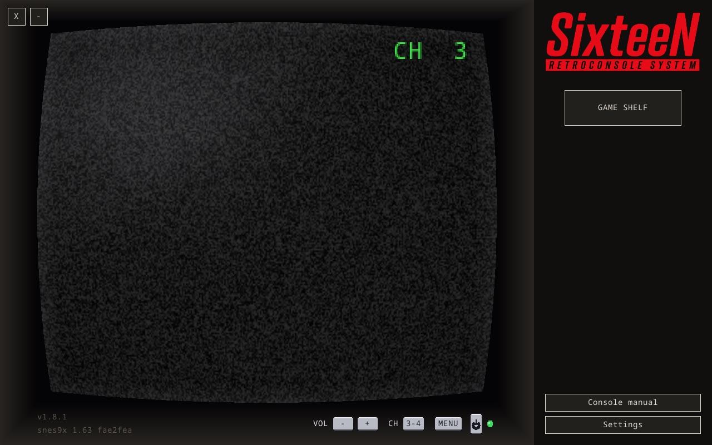
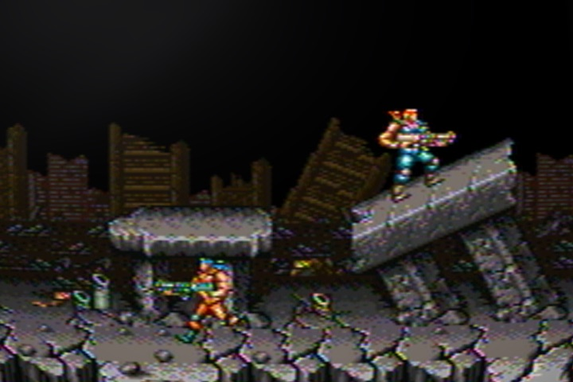
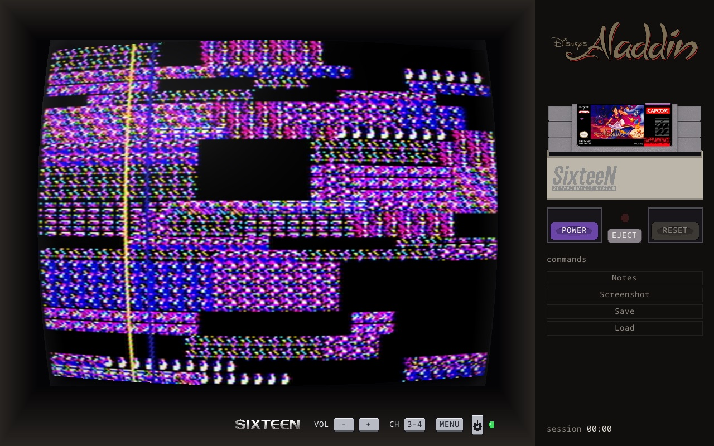
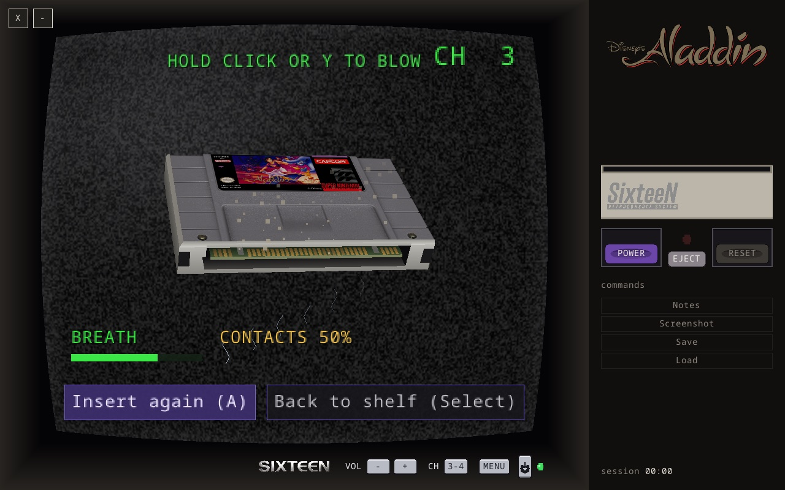
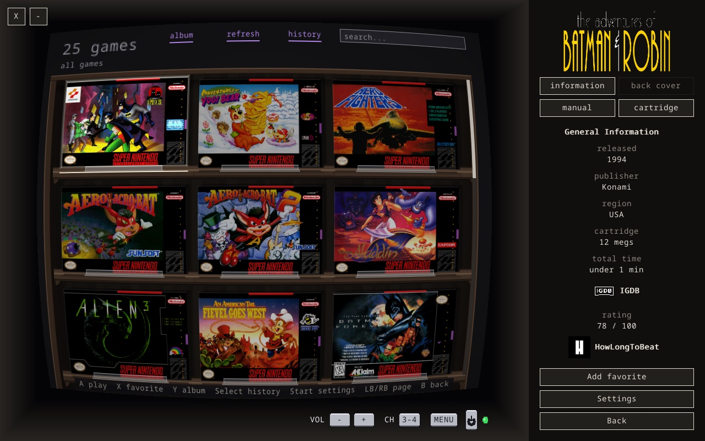
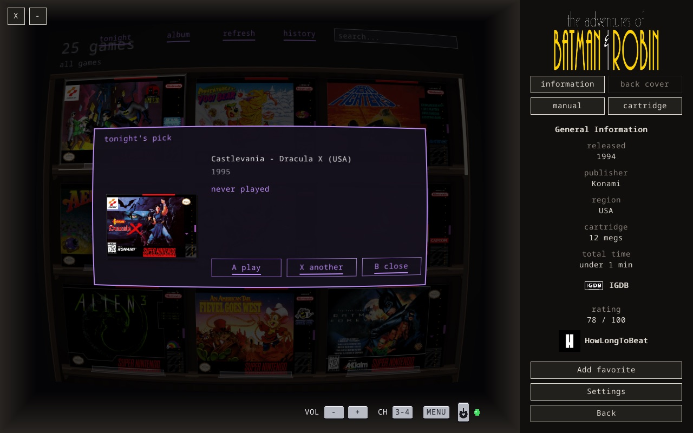
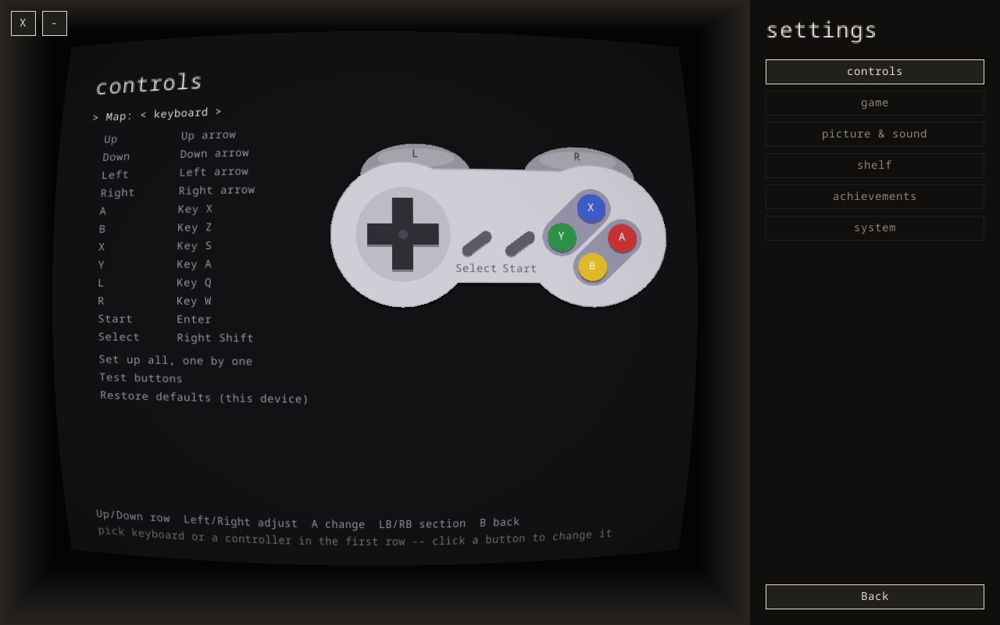
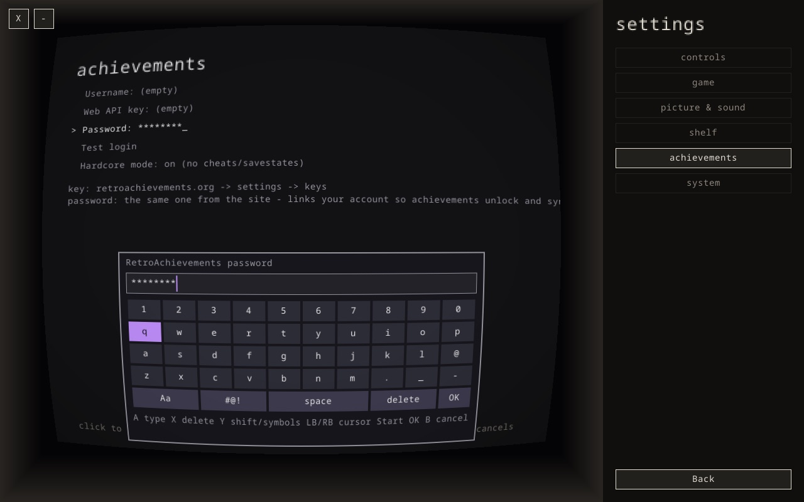
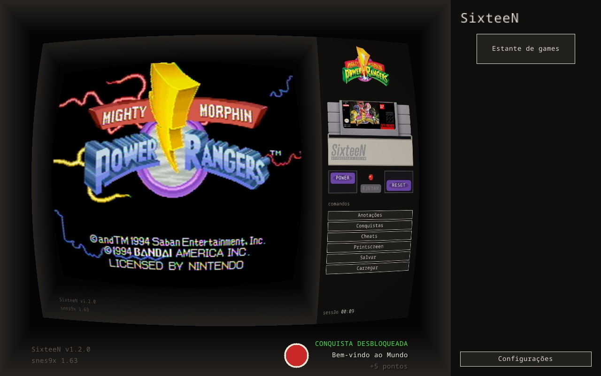
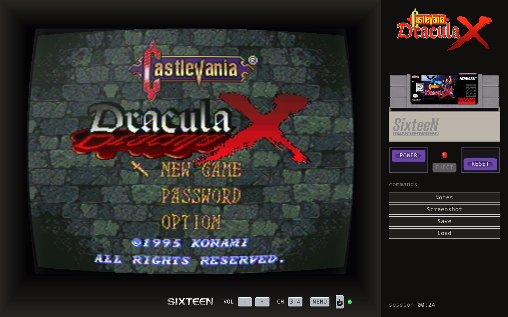

owner'smanual manual doproprietário
A whole Super Nintendo console on your screen — CRT tube, cartridge slot, POWER switch and a shelf for your games — instead of just a window with the game. Built around snes9x, the reference SNES emulator.
Um console de Super Nintendo inteiro na sua tela — tubo CRT, slot de cartucho, chave POWER e uma estante para os seus jogos — em vez de só uma janela com o jogo. Construído ao redor do snes9x, o emulador de referência.
v1.8.1
free · offline · gamepad-firstgrátis · offline · feito para o controle
macOS / Windows / Linux / Steam Deck

- The consoleO console§1
- Pick your TVEscolha a sua TV§2
- Blow the cartridgeSopre o cartucho§3
- The game shelfA estante de jogos§4
- 100% gamepad & Steam Deck100% no controle & Steam Deck§5
- Achievements, cheats & notesConquistas, cheats & anotações§6
- Getting startedComo ligar§7
- SpecificationsEspecificações§8
- Notices & licensesAvisos & licençasA
The consoleO console
Most frontends give you a grid of games and a window. SixteeN gives you back the object: the screen wakes up on channel 3 static, you pick a game on the shelf, the cartridge slides into the slot with a click — and the console only turns on when you press POWER, like the hardware. EJECT only works with the power off.
A maioria dos frontends te dá uma grade de jogos e uma janela. O SixteeN te devolve o objeto: a tela acorda em estática no Canal 3, você escolhe o jogo na estante, o cartucho desce e encaixa no slot com um clique — e o console só liga quando você aperta POWER, igual ao hardware. O EJETAR só funciona com o console desligado.
And it is not a new emulator: snes9x (the libretro core) runs the games, downloaded and kept up to date by the app. SixteeN is everything around it — the TV, the console, the shelf, the sound of the room.
E não é um emulador novo: quem roda os jogos é o snes9x (o core libretro), baixado e atualizado pelo próprio app. O SixteeN é tudo ao redor dele — a TV, o console, a estante, o som da sala.


Pick your TVEscolha a sua TV

The picture goes through Blargg's NTSC filter onto a curved tube with its own glass, glare and vignette. Each look pairs a signal (RF, composite, S-Video, RGB) with its scanlines, aperture grille or LCD pixel grid — and you can mix them: the RF antenna signal with the scanlines of a PVM, say.
A imagem passa pelo filtro NTSC do Blargg e cai num tubo curvo com vidro, reflexo e vinheta próprios. Cada visual junta um sinal (RF, composto, S-Video, RGB) com as suas scanlines, grade de aberturas ou grade de pixels de LCD — e dá para misturar: o sinal da antena com as scanlines de um PVM, por exemplo.
The TV's own MENU button adjusts brightness, contrast, color and sharpness in green 90s on-screen text, applied inside the real filter — not on top of it.
A tecla MENU da própria TV ajusta brilho, contraste, cor e nitidez em letras verdes de TV dos anos 90, aplicados dentro do filtro de verdade — não por cima dele.
Blow the cartridgeSopre o cartucho


Turn on bad contact (off by default; "rare" or "90s") and sometimes POWER fails the way it used to: a black screen with a hum, garbage tiles, a frozen title with the music looping, or the game running with scrambled graphics — a stuck data pin really corrupting video memory — until it crashes.
Ligue o mau contato (desligado por padrão; "raro" ou "anos 90") e às vezes o POWER falha do jeito de antes: tela preta com zumbido, lixo de tiles, a abertura travada com a música em loop, ou o jogo rodando com os gráficos embaralhados — um pino de dados grudado corrompendo a memória de vídeo de verdade — até travar.
Eject it and the cartridge comes to the front of the TV, in 3D: hold the button to blow the dust off (blow too much and the pins fog up). On a Steam Deck or ROG Ally you can blow into the real microphone. Your save is never touched.
Ejete e o cartucho vem para a frente da TV, em 3D: segure o botão para soprar a poeira (soprar demais embaça os pinos). No Steam Deck ou no ROG Ally dá para soprar no microfone de verdade. O save nunca é tocado.
The game shelfA estante de jogos

Your games stand on a shelf with their boxes. The side panel shows the year, publisher, region, cartridge size, your play time, the IGDB rating and HowLongToBeat times — plus the back cover, the cartridge and the manual (PDF) paged inside the TV.
Os seus jogos ficam de pé na estante, com as caixas. O painel lateral mostra ano, editora, região, tamanho do cartucho, o seu tempo de jogo, a nota da IGDB e os tempos do HowLongToBeat — e ainda a contracapa, o cartucho e o manual (PDF) folheado dentro da TV.
Search, favorites, "recently played", a history with time per session, and tonight's pick, which suggests the game you haven't touched in a while. A game with no art becomes a grey cartridge with a hand-written label.
Busca, favoritos, "jogados recentemente", histórico com o tempo de cada sessão e a sugestão da noite, que sorteia o jogo que você não abre há tempo. Jogo sem arte vira um cartucho cinza com etiqueta escrita à mão.

100% gamepad & Steam Deck100% no controle & Steam Deck


Everything works with a controller — shelf, settings, achievements login, screenshot captions. In game, hold Select + Start for the game menu: save and load state, screenshot, notes, achievements, reset, eject. The left stick works as the D-pad, and players 1 and 2 each get their own mapping, with Xbox, PlayStation or Nintendo button names.
Tudo funciona no controle — estante, configurações, login das conquistas, legenda dos prints. No jogo, segure Select + Start para o menu do jogo: salvar e carregar estado, print, anotações, conquistas, reset, ejetar. O analógico esquerdo funciona como direcional, e os jogadores 1 e 2 têm mapas próprios, com os nomes dos botões de Xbox, PlayStation ou Nintendo.
Achievements, cheats & notesConquistas, cheats & anotações


- RetroAchievements
- Hardcore or softcore, the game identified by its ROM hash, progress "X of Y" on the shelf and a medal for games you've beaten.
- Hardcore ou softcore, o jogo identificado pelo hash da ROM, progresso "X de Y" na estante e medalha para os jogos zerados.
- Cheat Genius
- A 90s-accessory-style cheat screen that boots before the game, with each game's cheat list and a code pad for your own Game Genie and RAM codes.
- Uma tela de cheats no clima dos acessórios dos anos 90, que liga antes do jogo, com a lista de cheats de cada jogo e um teclado para os seus códigos de Game Genie e de RAM.
- Notes bookLivro de anotações
- Pausing opens a two-page book: free-text notes and 15 screenshot slots per game, which you can name and pin to the console panel.
- Pausar abre um livro de duas páginas: anotações livres e 15 slots de print por jogo, que dá para nomear e fixar no painel do console.
- Screenshot albumÁlbum de prints
- Every screenshot of every game in one place, right from the shelf.
- Todos os prints de todos os jogos num lugar só, direto da estante.
- Console manualManual do console
- SixteeN's own 10-page manual opens inside the TV, in English or Portuguese.
- O manual do próprio SixteeN, de 10 páginas, abre dentro da TV, em português ou inglês.
Getting startedComo ligar
-
step 1passo 1
Download the appBaixe o app
Latest release: DMG for macOS, zip for Windows, AppImage or Flatpak for Linux and the Steam Deck — SDL3 included, nothing else to install.
Última release: DMG para macOS, zip para Windows, AppImage ou Flatpak para Linux e Steam Deck — com a SDL3 junto, sem instalar mais nada.
-
step 2passo 2
Install the coreInstale o núcleo
With no core installed, the home screen offers to download the snes9x core from the libretro buildbot, checked with SHA-256 — and keeps it up to date.
Sem núcleo instalado, a tela inicial oferece baixar o núcleo snes9x do buildbot da libretro, conferido por SHA-256 — e o mantém atualizado.
-
step 3passo 3
Add your gamesColoque seus jogos
Put your
.sfc,.smcor.zipROMs in theroms/folder, and the art (optional) inassets/, with the same name as the ROM.Coloque as ROMs
.sfc,.smcou.zipna pastaroms/, e as artes (opcionais) emassets/, com o mesmo nome da ROM.
| macOS | ~/Library/Application Support/SixteeN |
|---|---|
| Linux / Deck | ~/.local/share/SixteeN · Flatpak: ~/.var/app/dev.ticianocorral.sixteen/data/SixteeN |
| Windows | next to the .exeao lado do .exe |
first launchprimeira abertura
The builds aren't signed by Apple or Microsoft, so the system asks you to confirm once. macOS: open the app, then go to System Settings → Privacy & Security and click Open Anyway. Windows: on the SmartScreen warning, click More info → Run anyway.
Os pacotes não são assinados pela Apple nem pela Microsoft, então o sistema pede uma confirmação na primeira vez. macOS: abra o app, vá em Ajustes do Sistema → Privacidade e Segurança e clique em Abrir Mesmo Assim. Windows: no aviso do SmartScreen, clique em Mais informações → Executar assim mesmo.
| macOS | Apple silicon (arm64), macOS 12+Apple silicon (arm64), macOS 12+ |
|---|---|
| Windows | x86_64, Windows 10+ |
| Linux | x86_64 — AppImage or Flatpak; Steam Deck testedx86_64 — AppImage ou Flatpak; testado no Steam Deck |
| inputcontroles | gamepad or mouse; keyboard optionalcontrole ou mouse; teclado opcional |
where to find game artonde achar as artes dos jogos
The app ships no box art, logos or manuals: they come from your own
images, in assets/cover, assets/backcover,
assets/logo, assets/cartridge and
assets/manual, with the same name as the ROM
file. Some community packs (a few need a free account; the
material belongs to each pack's authors):
O app não distribui capas, logos nem manuais: eles vêm de imagens
suas, nas pastas assets/cover,
assets/backcover, assets/logo,
assets/cartridge e assets/manual, com o
mesmo nome do arquivo da ROM. Alguns acervos da
comunidade (alguns pedem cadastro gratuito; o material pertence
aos autores de cada pacote):
| cartridgecartucho | 2D Carts — arcdragon · Carts — Abeezy (EmuMovies) · Carts — Abeezy (LaunchBox) |
|---|---|
| logos | SNES Logos Pack (EmuMovies) |
| boxcapas | Complete Accurate USA Retail Box Art (EmuMovies) · Super Nintendo 3D Box (LaunchBox) |
| back covercontracapa | SNES Boxes Back Pack (EmuMovies) |
| manualsmanuais | SNES Game Manuals Pack (EmuMovies) |
SpecificationsEspecificações
| emulationemulação | snes9x (libretro core) — downloaded and updated by the app; SixteeN is the console around it, not a new emulatorsnes9x (core libretro) — baixado e atualizado pelo app; o SixteeN é o console ao redor, não um emulador novo |
|---|---|
| videovídeo | Blargg's NTSC filter, 7 screen looks, scanlines and masks, full screen at the display's native resolutionfiltro NTSC do Blargg, 7 visuais de tela, scanlines e máscaras, tela cheia na resolução nativa do monitor |
| audioáudio | 48 kHz stereo; TV speaker or "3-in-1" sound, optional hiss and flyback whine48 kHz estéreo; som da TV ou do "3 em 1", chiado e zumbido do flyback opcionais |
| codecódigo | Rust on SDL3, in four layers of crates: presentation, domain, emulation, platformRust sobre SDL3, em quatro camadas de crates: apresentação, domínio, emulação, plataforma |
| packagespacotes | DMG / zip / AppImage / Flatpak with SDL3 bundled, built for every releaseDMG / zip / AppImage / Flatpak com SDL3 embutida, gerados a cada release |
| datadados | 100% local — no database server, no cloud, no telemetry100% locais — sem servidor de banco de dados, sem nuvem, sem telemetria |
| languagesidiomas | English and Brazilian Portugueseinglês e português do Brasil |
Notices & licensesAvisos & licenças
important noticeaviso importante
No ROM or core ships with the app: your games are yours, and the snes9x core is downloaded straight from the official libretro buildbot.
Nenhuma ROM ou núcleo vem com o app: os seus jogos são seus, e o núcleo snes9x é baixado direto do buildbot oficial da libretro.
about the screenssobre as telas
Every image is a real capture of the app, taken with the author's own library — Contra III, Castlevania: Dracula X, Aladdin and friends. The achievement notification comes from an earlier version, with Mighty Morphin Power Rangers. Box art and commercial games belong to their owners. To try it without a ROM of your own, the open-source homebrew Platformer Example (by NovaSquirrel) comes as an example pack you can install from dev mode (Konami code on the home screen).
Todas as imagens são prints de verdade do app, feitos com a biblioteca do autor — Contra III, Castlevania: Dracula X, Aladdin e companhia. A notificação de conquista é de uma versão anterior, com Mighty Morphin Power Rangers. As capas e os jogos comerciais pertencem aos seus donos. Para testar sem ROM própria, o homebrew open source Platformer Example (de NovaSquirrel) vem como pacote de exemplo, instalável pelo modo dev (código Konami na tela inicial).
licenseslicenças
SixteeN is a personal, non-commercial project under the MIT license. snes9x has its own non-commercial license — which is why the core never ships in the package. Third parties are listed in THIRD-PARTY-NOTICES.md. RetroAchievements is a third-party service and needs its own account.
SixteeN é um projeto pessoal, sem fins comerciais, sob licença MIT. O snes9x tem licença própria não comercial — é por isso que o núcleo nunca vem no pacote. Terceiros listados em THIRD-PARTY-NOTICES.md. RetroAchievements é um serviço de terceiros e precisa de conta própria.